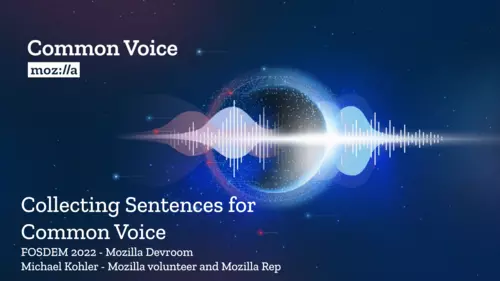
Collecting Sentences for Common Voice, FOSDEM 2022
Talk at FOSDEM 2022 in the Mozilla DevRoom (Recording/Slides)
Talks
On stage
Talks
I give talks about all Mozilla-related topics. You can find the slides and recordings here.

Talk at FOSDEM 2022 in the Mozilla DevRoom (Recording/Slides)
Firefox Quantum Release Party in Switzerland
Presentation about the features of Firefox Quantum and Proton
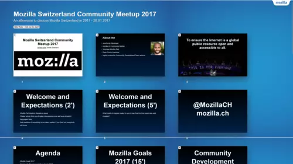
Mozilla Switzerland Community Meetup introduction slides
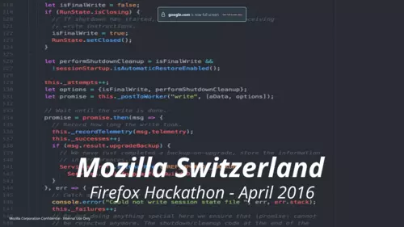
Introduction slides for the Firefox Hackathon organized in Switzerland
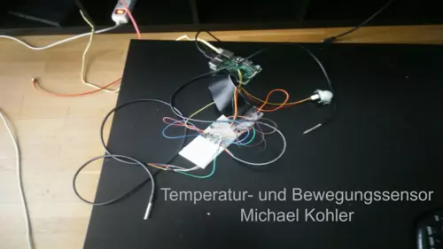
Project presentation for my Raspberry Pi temperature monitoring project at University (German)
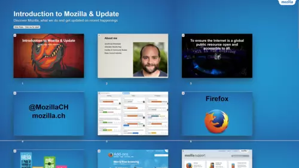
Introduction to Mozilla and updates about current initiatives at the TechUP meeting in Lucerne
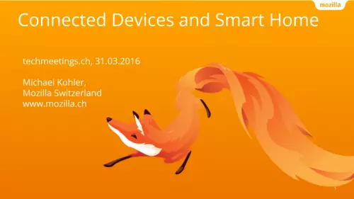
Talk about Connected Devices and Smart Home efforts by Mozilla at the TechMeetings in Fribourg
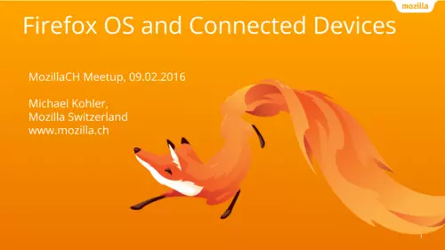
Talk about the future of Firefox OS in regards to Connected Devices initiatives
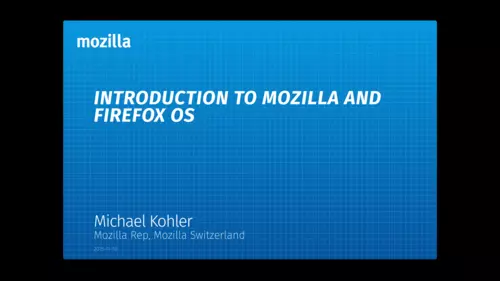
Introduction to Mozilla and Firefox OS at the WebMardi meetup in Lausanne
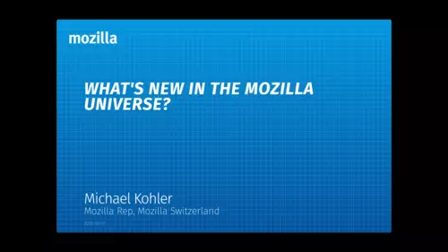
Mozilla Update at the Mozilla Day in Switzerland
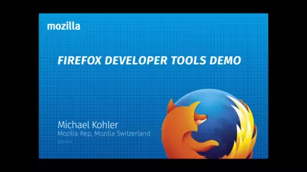
Demo of the Firefox Dev Tools
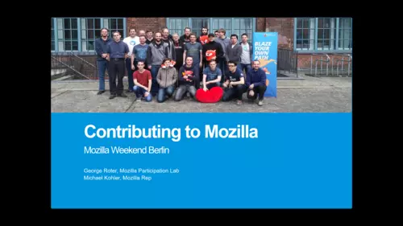
Introduction to Contributing at Mozilla for different projects at the Mozilla Weekend Berlin 2015
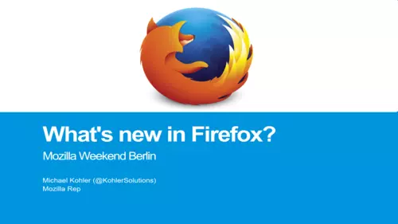
Update about Firefox at the Mozilla Weekend Berlin 2015
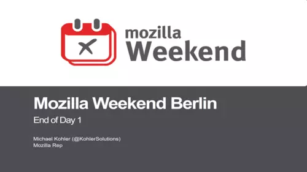
Outro slides Day 1 for the Mozilla Weekend Berlin 2015
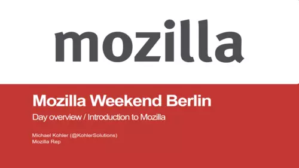
Intro slides Day 1 for the Mozilla Weekend Berlin 2015
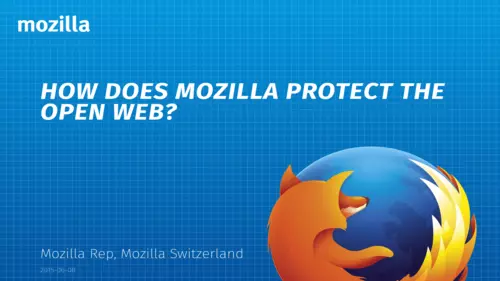
Talk about Mozilla's mission at a Mozilla meetup in Bern
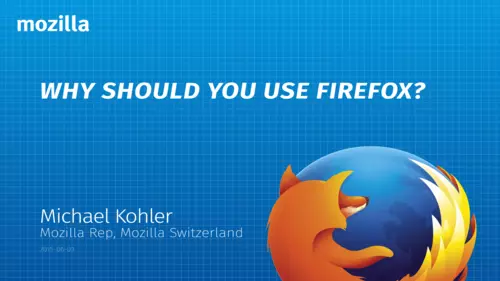
Talk about why you should use Firefox at the Mozilla meetup in Switzerland
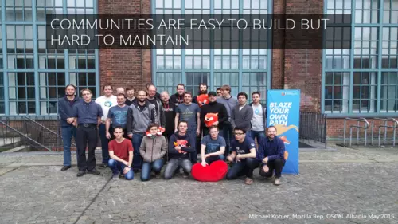
Talk at OSCAL 2015 about maintaining and growing communities by the example of Mozilla
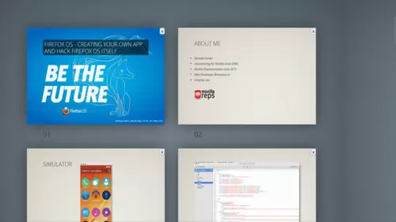
Slides for a Firefox OS Apps workshop at OSCAL 2015
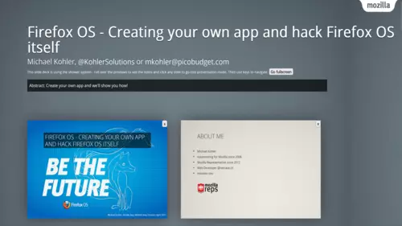
Firefox OS Apps workshop at the MobileCamp Dresden
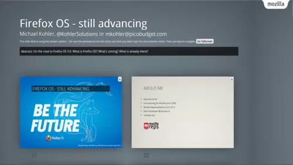
Keynote at the MobileCamp Dresden
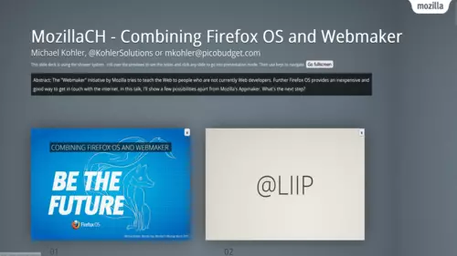
Talk about my efforts to combine Firefox OS and Webmaker to teach Web basics by the example of creating a Firefox OS app
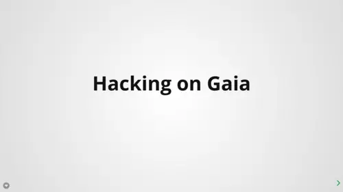
Talk about hacking on Gaia, the frontend for Firefox OS at FOSS Asia 2015
Talk about my efforts to combine Firefox OS and Webmaker to teach Web basics by the example of creating a Firefox OS app at FOSS Asia 2015
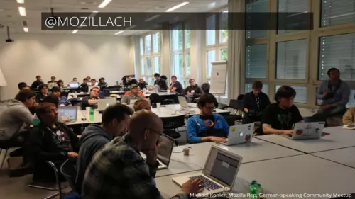
Update about the Mozilla Switzerland community at a Mozilla community meetup in Berlin
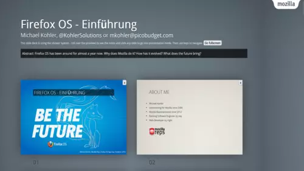
Introduction slides for the Firefox OS App Day in Frankfurt
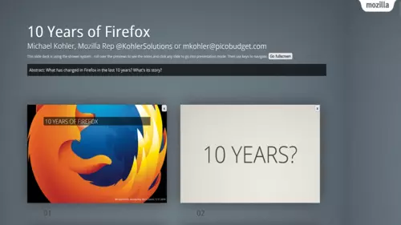
Celebration of Firefox turning 10, including cake!
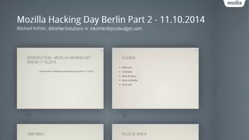
Introduction slides for the Mozilla Hacking Day in Berlin
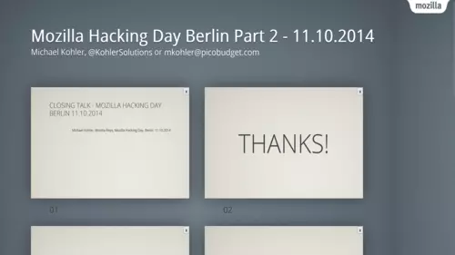
Closing slides
Introduction to Firefox OS Development at the TechUp July meeting in Lucerne
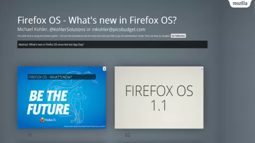
Updates about Firefox OS at the App Day 2014 in Zurich
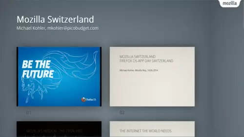
Introduction for the Mozilla Firefox OS App Day Zurich
Introduction to Firefox OS at the MobileCamp Dresden
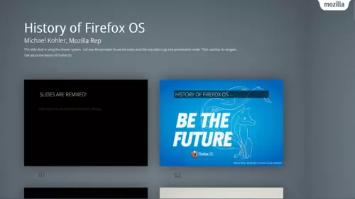
Talk about the history of Firefox OS at the Firefox OS App Day in Düsseldorf
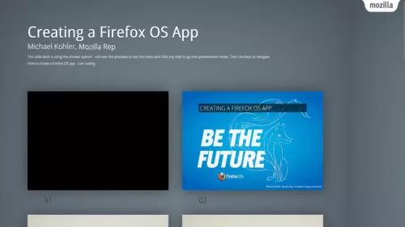
Live coding session as an introduction at the Firefox OS App Day in Düsseldorf
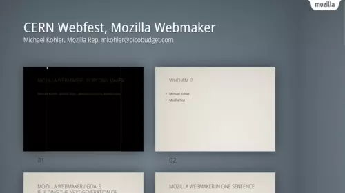
Introduction to Mozilla Webmaker at the CERN Webfest
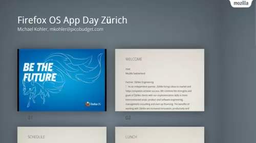
Firefox OS App Day introduction slides
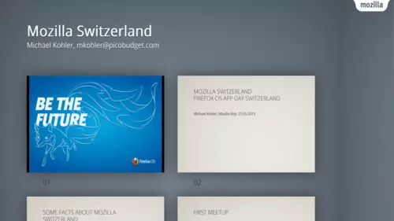
Firefox OS App Day introduction to the Mozilla Switzerland community
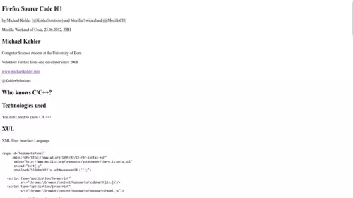
Introduction into the Firefox source code at the Weekend of Code in Switzerland